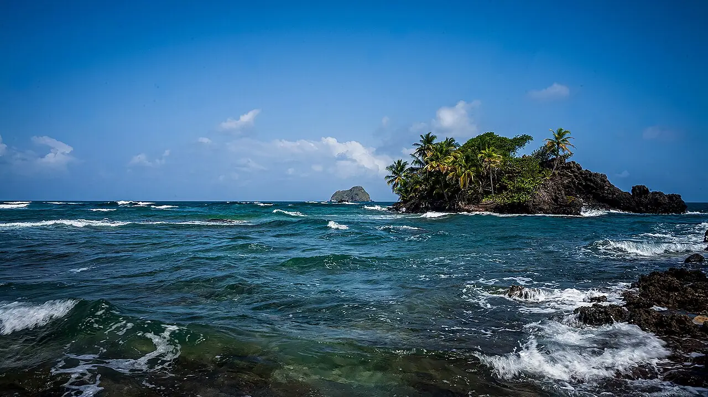

Capurganá — Sapzurro
Chocó, Colombie · snorkeling, baignade, plongée

Village sans voitures du golfe d’Urabá, près de la frontière panaméenne, entre jungle et mer des Caraïbes. On y rejoint à pied ou en bateau des criques comme Aguacate ou Sapzurro pour le snorkeling.
- Lieu
- Chocó, Colombie
- Niveau
- Débutant
- Activités
- snorkeling, baignade, plongée
- Type d'eau
- Mer / océan
- Coordonnées
- 8.64, -77.35 (position approximative du secteur)
Dangers à connaître
- Traversée en bateau rapide souvent agitée.
- Coraux et oursins dans les criques.
Le conseil d'Ocean Buddy
Accès en bateau rapide depuis Necoclí ou Turbo, souvent secoué : range tes affaires dans un sac étanche.
Ouvrir dans Ocean Buddy Télécharger sur l'App Store
Source : Fiche Ocean Buddy · septembre 2026 · à vérifier localement.